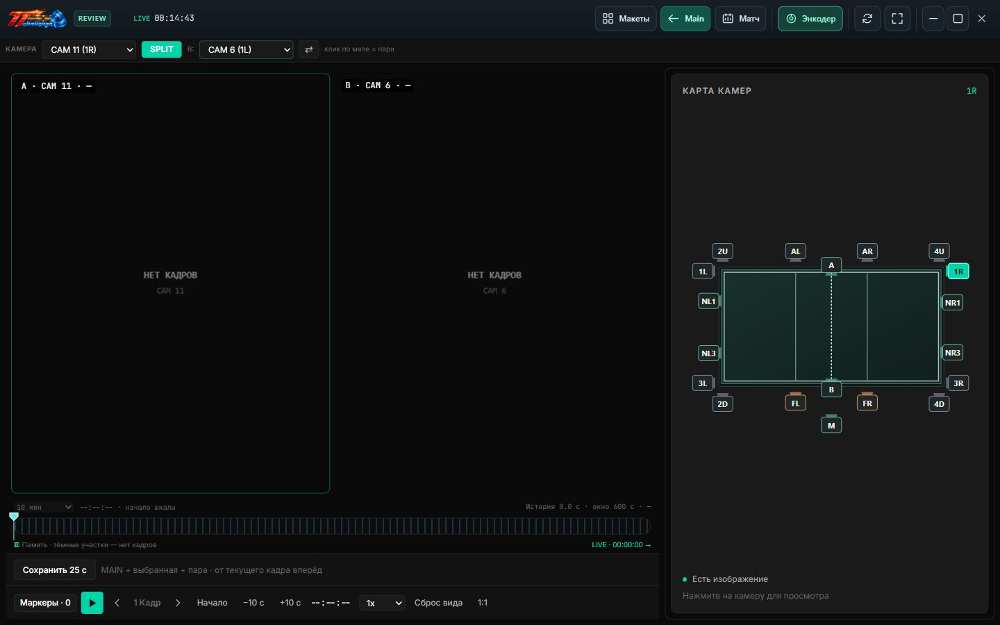

Один момент. Два ракурса.
Split размещает две камеры рядом для синхронного просмотра. Масштаб и положение изображения можно менять.
ВИДЕОПОВТОРЫ ДЛЯ СПОРТА
Система видеоповторов для спорта.
Рассмотрите эпизод с разных сторон, вернитесь к нужному кадру и сохраните момент.
ОТ ОБЩЕГО ПЛАНА К КАЖДОМУ КАДРУ
Увидеть больше.
ДВА РАКУРСА · ОБЩАЯ ШКАЛА ВРЕМЕНИ01 / ВНУТРИ ПРОГРАММЫ
Пример конфигурации TT Vision Challenge.
Камеры не подключены, поэтому области видео пустые.

Карта справа переключает камеру. Под изображением находятся шкала истории, переход по кадрам, скорость, маркеры и сохранение 25 секунд.
Split размещает две камеры рядом для синхронного просмотра. Масштаб и положение изображения можно менять.
Шкала времени, покадровые шаги и список маркеров помогают найти нужный момент в доступной истории.
Сохраняйте MAIN, выбранную камеру и парную камеру Split для последующего разбора.
02 / РАБОЧЕЕ МЕСТО КАЖДОГО УЧАСТНИКА
Выберите раздел, чтобы узнать,
как он используется во время матча.
РАБОЧЕЕ МЕСТО ОПЕРАТОРА
Разместите окна камер в удобном макете, наблюдайте за изображением и управляйте записью матча.
03 / ОТ ЭПИЗОДА К РЕШЕНИЮ
Инструменты для оператора.
Больше информации для судьи.
Поставьте маркер, чтобы быстро вернуться к эпизоду.
Найдите камеру, с которой нужная деталь видна яснее.
Управляйте воспроизведением и сравнивайте изображения.
Оставьте видеоматериал для последующего разбора.
TT VISION CHALLENGE / ДЛЯ ВАШЕЙ ПЛОЩАДКИ
Рассматриваете покупку системы видеоповторов?
TT Vision Challenge объединяет работу с видео,
управление матчем и вывод на экран площадки.
НАЧНИТЕ С ВАШЕЙ ЗАДАЧИ
Составьте краткое описание для обсуждения покупки.
Контакт для отправки добавим позже.
ЕЩЁ НЕСКОЛЬКО ДЕТАЛЕЙ
TT Vision Challenge — приложение для работы с видеоповторами и управления матчем. На этом сайте представлены снимки настоящего интерфейса локальной сборки без подключённых камер. Это обзор программы, а не работающий видеоплеер в браузере.
Совместимость камер, сеть, накопители и производительность ПК проверяются для конкретной конфигурации. Количество камер, разрешение и частота кадров подбираются вместе, после проверки оборудования.
Да. Матч-контроллер предназначен для управления с отдельного устройства, а Broadcast выводит оформление матча на выбранный экран. Сеть и подключение дисплеев настраиваются для вашей площадки.
Сайт готовится к приёму обращений. Контакты для обсуждения покупки будут опубликованы здесь. Можно скачать описание своей задачи в разделе подбора системы. Сейчас сайт не принимает заявки и платежи.